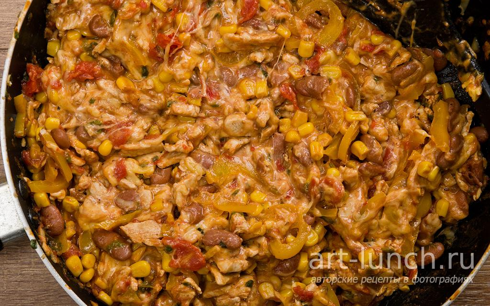

Babaganush

Babaganoush with sesame - A classic Middle Eastern appetizer that can be eaten on its own, with bread, or as a cold or hot side dish. It goes best with dishes with cheese and lamb.
Ingredients - Babaganush:
- tortillas 4-5 pcs.
- chicken fillet 300 g
- canned beans 150 g
- canned corn 150 g
- tomatoes 300 g
- bulgarian pepper 1 pc.
- cheese 200 g
- green onion 4 stalks
- garlic 3 cloves
- 1/2 teaspoon chili pepper
- cumin (cumin) 1/4 teaspoon
- salt to taste
Recipe - Babaganush:
- Finely chop the onion and garlic.
- Saute the onion and garlic in vegetable oil for about 2 minutes over medium heat. After that, we put them in a plate.
- Cut the chicken into small pieces and fry in preheated vegetable oil over high heat for 2-3 minutes until golden brown. Fry in small parts so that the meat gets a crust faster, which will not allow the juice to escape and the chicken will be juicier and softer. Add salt to taste and mix well.
- Add the onion, garlic and pepper, cut into strips, to the meat. Fry over medium heat for about 3 minutes.
- Add the beans, corn, cumin, ground chili pepper and tomatoes to the pan. I used canned tomatoes, but you can also use tomato puree or finely chopped tomatoes without the skin. Cumin should be ground or ground with your fingers to small grains. Mix well and fry over medium heat for another 3 minutes.
- Grate the cheese on a coarse grater, it is better to use the one that melts well when heated. Add the cheese to the pan and mix well.
- We wait for the cheese to melt and remove the pan from the heat.
- 
- We're making tortillas, and now we're going to make burritos. On the edge of the tortilla spread 3-4 tablespoons of the finished filling. And fold the burrito as shown in the photo.
- We wrap one end of the burrito with foil or parchment so that the filling does not leak out, and serve it to the table, where a group of lovers of Mexican cuisine has gathered. The burrito is ready! Enjoy your meal!